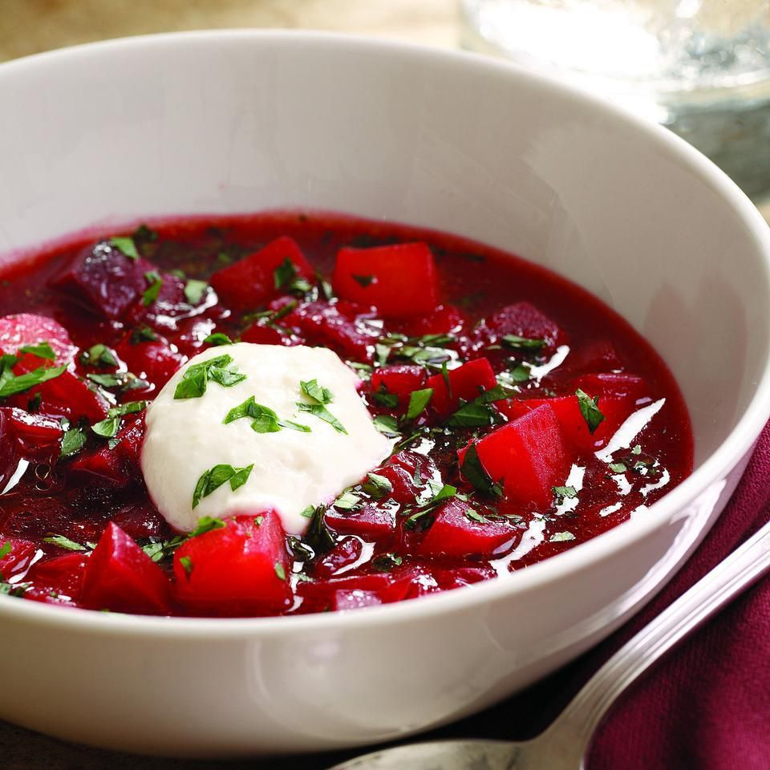

|  |
- boneless beef - 1 pound
- red cabbage - 1/2
- carrots - 3 medium
- onion - 1 large
- red beets - 3 large
- potatoes- 1 large
- salt, pepper
- olive oil - 2 tablespoon
- tomato paste - 1 can
- broth - 8 cups
- dried bay leaves - 2
- red vine vinegar - 1/4 cup
- light brown sugar - 1/4 cup
|